- Partia mięśniowa
- Rodzaj treningu
- Przed i po treningu
- Dodatkowe informacje
Ćwiczenia na mięśnie nóg, pośladków i łydek
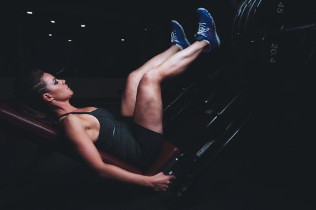
1. Przysiady ze sztangą trzymaną na barkach lub z przodu
2. Przysiady z hantlami
3. Martwy ciąg na prostych nogach
4. Przysiady bułgarskie
5. Wykroki
6. Zakroki
7. Wypychanie nóg na suwnicy
8. Hack-przysiady
9. Prostowanie nóg w siadzie na maszynie
10. Uginanie nóg w leżeniu na maszynie
11. Przywodzenie nóg do wewnątrz
12. Odwodzenie nóg na zewnątrz
13. Odwodzenie nogi w tył
Łydki
1. Wspięcia na palce w staniu
2. Wspięcia na palce w siadzie
3. Wypychanie ciężaru na maszynie palcami
4. Wspięcia na palce na hack-maszynie
5. Ośle wspięcia
6. Wspięcia na pięty w staniu
Ćwiczenia na mięśnie pleców
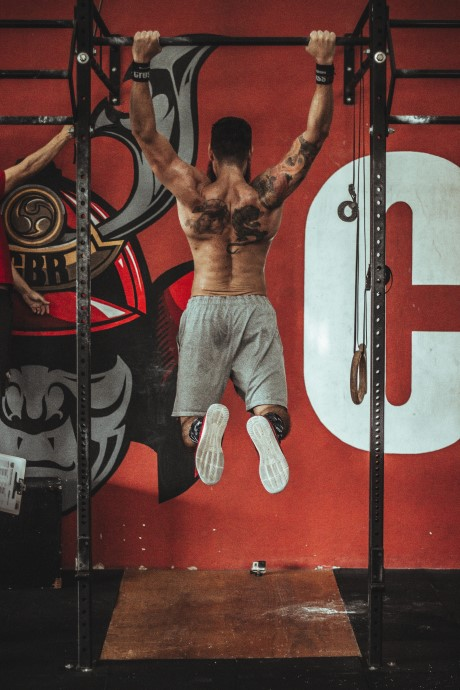
1. Podciąganie na drążku chwytem nautralnym, nachwytem lub podchwytem
2. Martwy ciąg
3. Martwy ciąg na prostych nogach
4. Wiosłowanie sztangą w opadzie tułowia
5. Wiosłowanie jednorącz hantelką w opadzie tułowia
6. Wiosłowanie w leżeniu na ławce poziomej
7. Przyciąganie linki wyciągu górnego lub dolnego w siadzie
8. Ściąganie drążka wyciągu górnego do klatki piersiowej chwytem neutralnym, nachwytem lub podchwytem
9. Przenoszenie sztangi w leżeniu na ławce poziomej
10. Skłony ze sztangą trzymaną na karku
11. Szrugsy
12. Unoszenie tułowia z opadu
Ćwiczenia na mięśnie klatki piersiowej
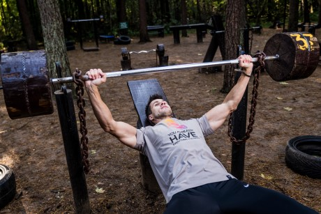
1. Wyciskanie sztangi lub hantelek w leżeniu na ławce poziomej
2. Wyciskanie sztangi lub hantelek w leżeniu na ławce skośnej
3. Pompki tradycyjne lub na poręczach
4. Rozpiętki z hantlami w leżeniu na ławce poziomej lub skośnej
5. Krzyżowanie linek wyciągu
Ćwiczenia na barki
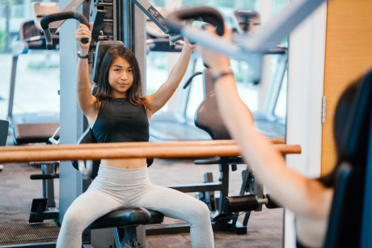
1. Wyciskanie sztangi zza lub sprzed głowy
2. Wyciskanie hantli nad głowę
3. Unoszenie hantli bokiem
4. Unoszenie hantli w opadzie tułowia
5. Unoszenie hantli przodem
6. Podciąganie sztangi lub hantelek wzdłuż tułowia
7. Odwrotne rozpiętki na maszynie
Ćwiczenia na ramiona, przedramiona
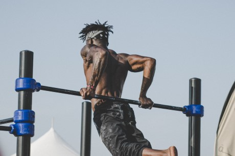
Biceps
1. Uginanie ramion ze sztangą lub hantlami podchwytem
2. Uginanie ramion z hantlami podchwytem z supinacją nadgarstka
3. Uginanie ramion z hantlami chwytem młotkowym
4. Uginanie ramion ze sztangą lub hantlami na modlitewniku
5. Uginanie ramienia z hantlą w siadzie w podporze o kolano
6. Uginanie ramion ze sztangą nachwytem stojąc lub na modlitewniku
7. Uginanie ramion podchwytem na wyciągu
Triceps
1. Pompki na poręczach
2. Pompki w podporze tyłem
3. Wyciskanie sztangi wąskim uchwytem w leżeniu na ławce poziomej
4. Prostowanie ramion na wyciągu
5. Wyciskanie francuskie w różnych wariantach
6. Prostowanie ramienia z hantelką w opadzie tułowia
7. Prostowanie ramienia podchwytem na wyciągu
Przedramiona
1. Uginanie nadgarstków podchwytem w siadzie
2. Uginanie nadgarstków nachwytem w siadzie
Ćwiczenia na brzuch
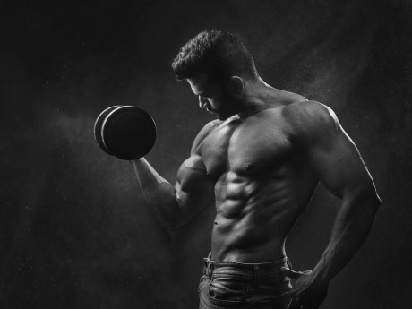
1. Unoszenie nóg w podporze
2. Unoszenie nóg w zwisie na drążku
3. Unoszenie nóg w leżeniu na ławce skośnej
4. Plank
5. Skłony tułowia z linką wyciągu klęcząc lub siedząc
6. Skręty tułowia w różnych wariantach
7. Skłony boczne
8. Skłony w leżeniu płasko
9. Skłony w leżeniu głową w dół
Trening na masę
Powinien bazować na ćwiczeniach
wielostawowych (przysiady, wyciskania, uginania, martwe ciągi) z użyciem
wolnych ciężarów takich jak sztanga i hantle. W miarę rosnącego zaawansowania osoby trenującej, trening warto uzupełnić w ćwiczenia
izolowane, np. na maszynach czy wyciągach. Ilość serii uzależniona jest od grupy mięśniowej, ilości ćwiczeń na daną partię oraz ilości powtórzeń w serii. Na duże grupy mięśniowe (np. uda, plecy, klatka piersiowa) na jedno ćwiczenie najlepiej przeznaczyć 3-4 serie (plus 1-2 serie rozgrzewkowe z mniejszym obciążeniem). Na mniejsze (np. biceps, triceps, łydki) optymalne będą 2-3 serie. Tygodniowa ilość serii powinna kształtować się w granicach 12-16 serii w przypadku dużych grup mięśniowych i 9-12 w przypadku małych. Optymalna ilość powtórzeń na serię to 5-12 (duże grupy mięśniowe) i 10-15 (małe). Przerwy między seriami: ok. 2 minuty. Są to ogólne zasady treningu, aczkolwiek należy dostosować je do własnych potrzeb, gdyż każdy organizm będzie reagował ciut inaczej na te same bodźce.
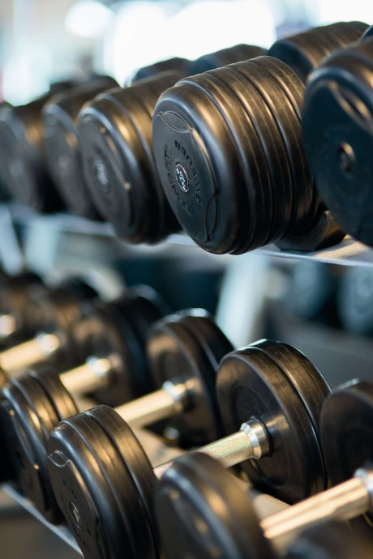
Trening na rzeźbę
Zalecane jest włączenie do treningu większej ilości ćwiczeń
izolowanych (wolne ciężary, maszyny, wyciągi). Można stosować
serie łączone,
superserie. Ilość serii uzależniona jest od grupy mięśniowej, ilości ćwiczeń na daną partię oraz ilości powtórzeń w serii. Na duże grupy mięśniowe (np. uda, plecy, klatka piersiowa) na jedno ćwiczenie najlepiej przeznaczyć 2-3 serie (plus 1 seria rozgrzewkowa z mniejszym obciążeniem). Na mniejsze (np. biceps, triceps, łydki) optymalne będą 1-2 serie. Tygodniowa ilość serii powinna kształtować się w granicach 9-12 serii w przypadku dużych grup mięśniowych i 6-10 w przypadku małych. Optymalna ilość powtórzeń na serię to 10-15. Przerwy między seriami: 30-60 sekund. Trening siłowy warto uzupełnić w trening
aerobowy lub
interwałowy. Są to ogólne zasady treningu, aczkolwiek należy dostosować je do własnych potrzeb, gdyż każdy organizm będzie reagował ciut inaczej na te same bodźce.
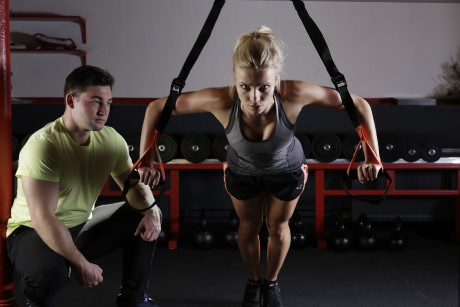
Trening na siłę
Powinien bazować na ćwiczeniach
wielostawowych (przysiady, wyciskania, uginania, martwe ciągi) z użyciem
wolnych ciężarów takich jak sztanga i hantle. Będzie to trening na
dużych obciążeniach z małą ilością powtórzeń w serii. Ilość serii uzależniona jest od grupy mięśniowej, ilości ćwiczeń na daną partię oraz ilości powtórzeń w serii. Na duże grupy mięśniowe (np. uda, plecy, klatka piersiowa) na jedno ćwiczenie najlepiej przeznaczyć 2-3 serie (plus 1-2 serie rozgrzewkowe z mniejszym obciążeniem). Na mniejsze (np. biceps, triceps, łydki) optymalne będą 1-2 serie. Tygodniowa ilość serii powinna kształtować się w granicach 8-10 serii w przypadku dużych grup mięśniowych i 6-8 w przypadku małych. Optymalna ilość powtórzeń na serię to 1-8. Przerwy między seriami: 3-4 minuty. Są to ogólne zasady treningu, aczkolwiek należy dostosować je do własnych potrzeb, gdyż każdy organizm będzie reagował ciut inaczej na te same bodźce.
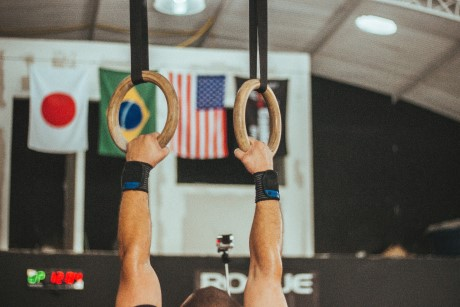
Rozgrzewka
Często pomijany, a tymczasem ważny element każdego treningu pozwalający uchronić nas przed kontuzjami. Solidna rozgrzewka powinna składać się z co najmniej 2 części:
ogólne rozgrzanie organizmu i pobudzenie układu krwionośnego oraz
rozgrzewka właściwa skupiająca się na obszarze, który mamy zamiar trenować i tym samym przygotowanie mięśni i stawów do obciążeń. Warto do rozgrzewki włączyć
lekkie rozciąganie, którego celem jest zwiększenie ruchomości stawów, przygotowanie ścięgien i lepsze ukrwienie mięśni. Ogólną rozgrzewkę można zrobić za pomocą maszyn, np.
orbitrek,
bieżnia czy
skakanka i powinna ona trwać ok. 7-10 minut. Rozgrzewka właściwa powinna obejmować wszelkiego rodzaju
wymachy ramion,
krążenia bioder,
uginanie kolan oraz
skłony tułowia, itp. i powinna trwać ok. 5 minut. Po rozgrzewce a przed każdym ćwiczeniem robimy
1-2 serie rozgrzewkowe z mniejszym ciężarem (ok. 70% ciężaru właściwego jakim zamierzamy ćwiczyć) i większą ilością powtórzeń.
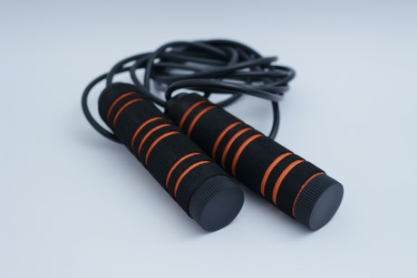
Streching
Po skończonym treningu dobrze jest uspokoić i rozluźnić zmęczone ćwiczeniami mięśnie. Streching istotnie powiększy zakres ruchu w stawach, a także wzmocni nasze ścięgna. Pozwoli też na polepszenie ukrwienia w mięśniach, co przyspieszy ich regenerację oraz zmniejszy ból w dniu następnym. Najlepszą oraz najbezpieczniejszą metodą strechingu jest
metoda statyczna. Polega ona na
powolnym i
stopniowym rozciąganiu mięśni do chwili, aż poczujemy opór. W tym momencie zatrzymujemy ruch i przytrzymujemy przez ok. 10 sekund, po czym wracamy do pozycji wyjściowej. Ponawiamy ćwiczenie jeszcze 2 razy.
Nie należy na siłę zwiększać zakresu ruchu. Zbyt szybkie i gwałtowne rozciąganie może prowadzić do
kontuzji mięśni oraz ścięgien.
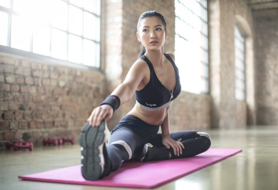
Kolejność wykonywania ćwiczeń
Istnieje kilka zasad, które pozwolą przeprowadzić trening w jak najbardziej efektywny sposób.
W pierwszej kolejności wykonujemy ćwiczenia na duże grupy mięśniowe, takie jak nogi, plecy, klatka piersiowa, następnie przechodzimy do barków, tricepsów, bicepsów, a kończymy na brzuchu. Ćwiczenia te można podzielić na złożone (które wykonujemy w pierwszej kolejności) oraz izolowane. Pozwala to na rozsądne wydatkowanie sił w stosunku do korzyści wynikających z danego ćwiczenia.
Najlepiej wykonać różne sekwencje ćwiczeń w seriach na daną partię (złożone i izolowane), a dopiero później przejść do kolejnej partii.
Dopuszczalne są ćwiczenia na zmianę pomiędzy seriami, jeżeli są to ćwiczenia antagonistycznych grup (przeciwstawne grupy mięśniowe), np. triceps i biceps.
Kolejność wykonywania ćwiczeń jest istotna nie tylko w zakresie pojedynczego treningu całego ciała (fbw), ale także podczas treningów na przestrzeni tygodnia, podczas którego wykonujemy po jednym treningu na każdą grupę mięśniową.
Podczas układania planu treningowego, należy pamiętać o następujących zasadach:
-
nie powinno się trenować mięśni grzbietu w przeddzień treningu mięśni ud (grzbiet ma zbyt mało czasu na regenerację).
Analogicznie należy postępować z poniższymi partiami:
- barkami i klatką piersiową,
- barkami i tricepsami,
- bicepsami i mięśniami górnymi grzbietu,
- przedramionami i bicepsami,
- przedramionami i tricepsami,
- łydkami i mięśniami ud.
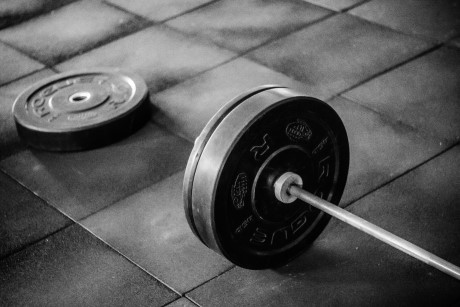
Intensywność
Na to pojęcie składa się wiele czynników: ilość treningów, ilość serii, ilość powtórzeń w seriach, wielkość ciężaru, długość przerw pomiędzy poszczególnymi seriami, ćwiczeniami i treningami, tempo ruchu podczas wykonywania ćwiczeń. Manipulując tymi czynnikami regulujemy
poziom intensywności. Zmiana już jednego czynnika powoduje różnicę w poziomie intensywności.
Bardzo ważnym elementem planowania treningów jest zróżnicowanie poziomu intensywności. Trening siłowy ze zmiennym poziomem intensywności jest efektywniejszy, niż trening ze stałą intensywnością przez cały rok. Brak zmian na tym podłożu prowadzi do znużenia treningiem oraz braku postępów. Jeśli intensywność treningów będzie zbyt mała, może to prowadzić do znużenia oraz zastoju w rozwoju umięśnienia. Natomiast jeśli będzie zbyt wysoka, może doprowadzić do zniechęcenia, przetrenowania, a nawet kontuzji. Trzeba uważnie wsłuchiwać się w sygnały wysyłane nam przez organizm, by w porę korygować wszelkie nieprawidłowości w swoim programie treningowym.
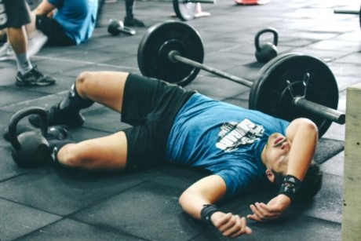
Regeneracja
Poza przemyślanym i dobrze skomponowanym treningiem oraz odpowiednią dietą, jest to najważniejszy czynnik decydujący o przyroście (lub jego braku) masy mięśniowej. Należy pamiętać, że mięśnie rosną właśnie podczas
odpoczynku i bez stworzenia im odpowiednich warunków do niego, nie można liczyć na ich rozwój.
Takie warunki to m.in.:
- adekwatny do wykonanego wysiłku treningowego czas wypoczynku,
- wspomaganie procesu regeneracji stosowaniem odnowy biologicznej (sauna, masaż, ćwiczenia na basenie, itp.)
- właściwa dieta dobrana pod kątem wykonywanych treningów i celów postawionych sobie w planie treningowym wspomagana odpowiednimi suplementami.
Czas potrzebny do regeneracji danych mięśni w zależności od stopnia intensywności:
Przy
niskiej intensywności:
- mięśnie ud i pośladków - 3 dni
- mięśnie grzebietu i klatki piersiowej - 2-3 dni
- mięśnie barków, bicepsów, tricepsów, łydek oraz brzucha - 2 dni
Przy
średniej intensywności:
- mięśnie ud i pośladków - 4 dni
- mięśnie grzebietu i klatki piersiowej - 3-4 dni
- mięśnie barków, bicepsów, tricepsów, łydek oraz brzucha - 3 dni
Przy
wysokiej intensywności (niewskazane przy dolnym odcinku grzbietu):
- mięśnie ud i pośladków - 5-7 dni
- mięśnie grzebietu i klatki piersiowej - 5-7 dni
- mięśnie barków, bicepsów, tricepsów, łydek oraz brzucha - 4-5 dni
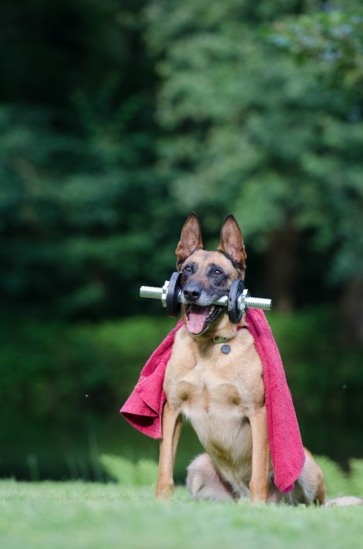
Wykorzystane źródła
- kulturystyka.pl
- potreningu.pl